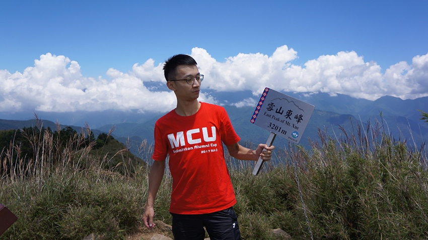
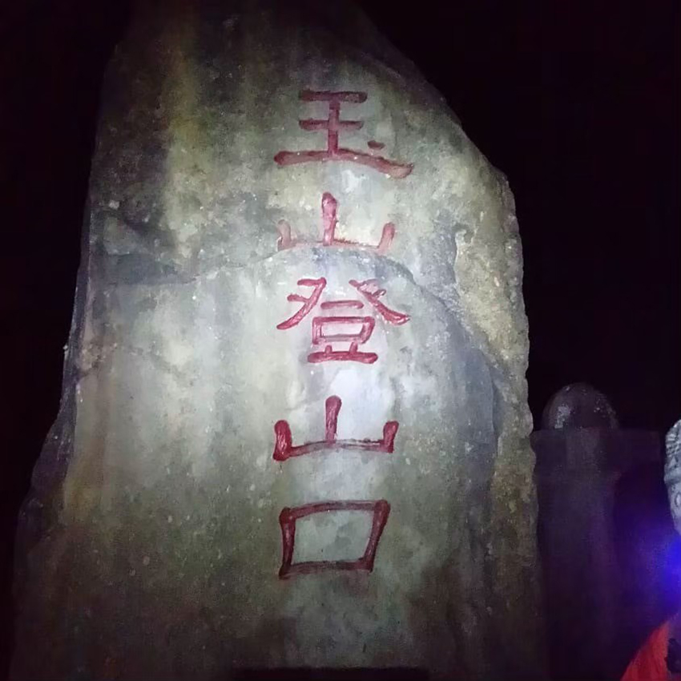
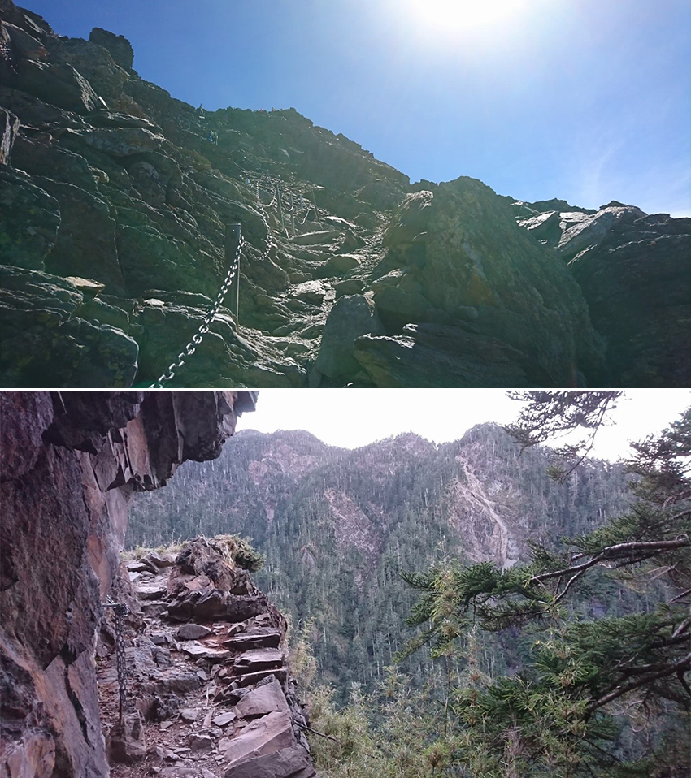
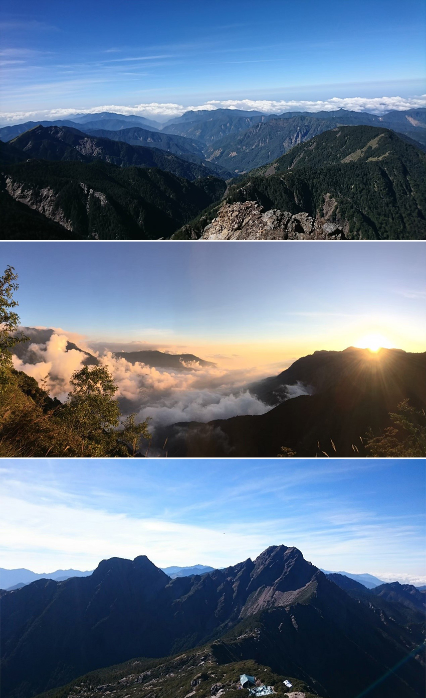
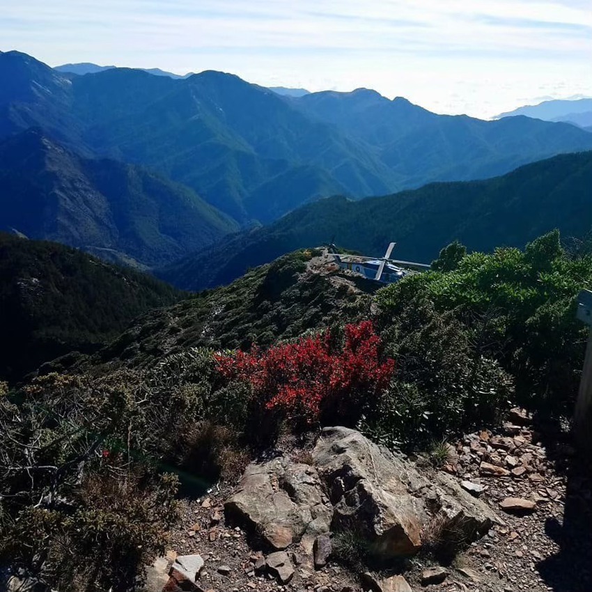
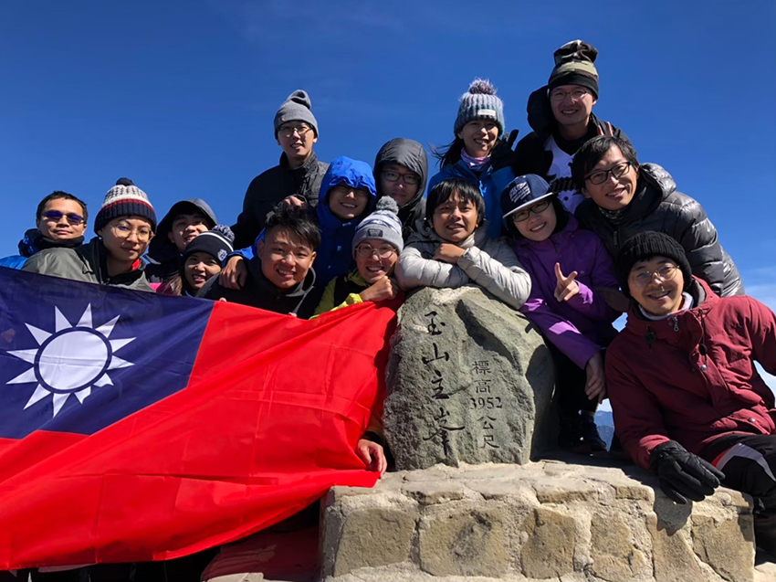

「你要不要一起爬玉山？」正當我猶疑之際，他又多嘴兩句。
「快啦，機會難得！搞不好一輩子就這一次了！？」忽然覺得有理，的確也是千載難逢的機會，便這樣答應下來，於是一群好友們相互揪團，最後成團人數也達到二十多人。
然而爬玉山並非國小遠足報名了就有資格，在這之前必須要有其他三千公尺以上高山的證明，而且二十多人要全部抽到排雲山莊住宿基本上是不可能的，那麼就只剩下一個絕望的選項 - 單攻。要完成這項艱鉅的任務需要好好累積經濟，於是在達成目標半年之前先在其他百岳熱熱身，才有希望登上東北亞的巔峰。
|  |
雪山東峰、合歡山、草嶺古道、角板山、五寮尖山..... 這半年期間，兩個禮拜到一個月左右的間隔就要出征一次、鍛鍊一次，經過其他百岳和不同山形的體驗後，有種玉山不再遙不可及的即視感？其實經歷了歷時十五小時的跋山涉水之後，這真的只是錯覺，當成功登頂後，沒想到下山之時才是惡夢的開始....
晚餐時間大伙先抵達東埔山莊，開始拿出泡麵等戰備儲糧簡單吃一頓，簡單洗漱後上床早早入睡。跟周公下棋到一半時，半夜兩點就要起床準備，整裝完畢後從停車場出發，走到登山口居然需要四十分鐘的路程，起初大家心情都有點亢奮，紛紛在登山口拍照，留下照片當作紀念。
|  |
第一次摸黑在山路上行走，老實說真有點恐怖，依靠著大家頭頂的燈光慢慢前進，從開始的有說有笑，越到後面大家的聲音越來越稀疏，玉山的考驗現在才正要開始。清晨的太陽冉冉升起，如同跟我們擦肩般，看似那麼近，卻又那麼的遠。微風伴隨著我們前行，一開始的上坡路段可能是大家剛起床精神奕奕，路段也不是多麼難走，沒碰到太大的困難便抵達排雲山莊這個中途站。在排雲山莊小憩片刻後便準備登上今日的目標 - 玉山主峰。登頂前那段路途著實讓我印象深刻，手腳並用的匍匐前進，跟一開始的平坦山路相比，難度增加了不少，大夥也彼此打氣、互相扶持終於登上了東北亞之巔。
|  |
我們在玉山主峰上足足待了有一小時之久，每個人都歡樂慶祝這次心願的完成，我與好友也拿起威士忌與白蘭地小酌幾口，小酌美酒歡慶於此刻。群山如同在我足下；白雲依偎在我身旁，眺望遠方的山峰讓三千九百公尺以上的美景盡收眼底，每個人不約而同紛紛拿起手機記錄這一望無盡的遼闊蒼穹，旖旎風光令人心曠神怡，煩惱都隨之消散。
|  |
拍的心滿意足之後回到排雲山修整片刻，飢腸轆轆的眾人趕緊拿出預先準備的糧食充飢，吃完後便倒頭就睡趁這時間趕緊恢復體力，等等下山還有四到五小時的路程，在這時我鬆懈了，完全沒意識到下山的路途是多麼的艱辛。前一晚過於亢奮沒什麼睡覺的我，下山途中頻頻見到周公，只能每走一段路就跟他下盤棋，隨著緯度的下降我也逐漸懷疑人生，還好有其他隊友的扶持才能安穩地走回登山口。
|  |
玉山單攻這項人生壯舉於我來說就如同當兵，可以高談闊論卻不想再經歷一次的人生篇章。一生一次，足以。
|  |